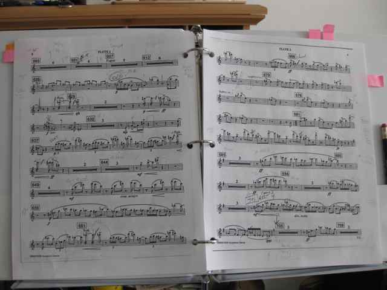

Recently I encountered on a blog that I follow, Expert Enough, the question, “When Can You Call Yourself An Expert?” There have been some interesting comments on the blog. Here is my own thinking on the subject.
Lately I’ve been having to say “No” a lot to events and activities that appeal to me, in order to make room for “Yes”. Time and energy are finite for us every day and every week, and our desires are inexhaustible.
Last year, I wrote a post about how I use my time. A lot has changed since then, with various rebalancings.
Another week has gone by, and what I thought might be a day of reckoning has come and gone, and I am still playing the flute in the CMU AUO and have not dropped out!
Here is a sample of the hardest music from Bernstein’s “Symphonic Dances from West Side Story” that I’m still struggling to play correctly, cleanly, and in tempo:

West Side Story: Fugue
West Side Story: Rumble
It is not very visible from my photos, but I have a huge number of pencil markings on my copy of the score.
I arrived early and couldn’t help admiring the view outside before entering the building as there was still daylight. Here are the Birmingham Bridge and the Monongahela River:
View of Birmingham Bridge from Pittsburgh Technology Council
View across Monongahela River from Pittsburgh Technology Council
A month ago I reported on how Abby and I had our first experience of French traditional dance. On Saturday, we went again to Skibo Gym at Carnegie Mellon University for another fun session of French dancing from 4:00 to 7:00 PM.
We had a great time again, and afterwards joined the instructors and some other people in having dinner at Gullifty’s.
When I started blogging, I did so with the idea that I should probably include a relevant photo or video with each blog post. I never really adhered to that idea, but it was put into my head because I had read that readers really like photos. And indeed, I personally like to see relevant and original photos accompanying other people’s blog posts. (I do get annoyed by photos that are stock photos, or sensationalist irrelevant photos (of celebrities or such) that seem designed to draw traffic.)
I have not taken many photos or videos recently. Why? I am faced with a kind of moral dilemma I have not quite resolved.
Feb 15, 2012 · 2 minute read · Comments Pinterestvisual
At some point some months ago I signed up for Pinterest, just because. I never used my account, but have been receiving notifications that people are following me. I presume this is happening through Facebook or Twitter contact lists. I have still never used my account. I have not yet looked at a single item on Pinterest, nor have I posted anything. So I am baffled by the Pinterest phenomenon.
Read On →
Two weeks ago, I wrote about joining the Carnegie Mellon All-University Orchestra, the first orchestra I have ever been in. I wrote of my terror as I realized that as a total beginner at flute, I was basically unable to play any of the music handed out.
I decided to work very hard at improving my flute skills to see whether I could get good enough in time to make it to the April 15 concert in respectable shape. I believe this is the most ambitious goal I have ever set for myself in my entire life. Not because it is the hardest goal to achieve, but because of the time pressure involved. If I were given eight months, I would say, yes, I can do it; it took me eight months to start playing the recorder and then be sufficiently skilled (at merely an intermediate level) to play easy music in a concert. But two months is another story.
Furthermore, the day of reckoning is not April 15. I feel it is next Sunday.
About two weeks ago Abby and I started a daily meditation practice in the morning. We’re still at it.
Recently I’ve seen some articles about meditation habits and difficulty.
The plain fact is that meditation is hard. There might be some kind of stereotype of meditation as “relaxing” or as blissing out or some such thing, but actually, meditation is quite hard.
Why is it so hard, and does putting effort into it somehow violate the point of it?
Feb 8, 2012 · 4 minute read · Comments exerciseCarnegie Mellon University
I’ve always had trouble keeping up an optimal exercise routine in the winter months, because it’s colder and less pleasant to be outside. Historically, unless I was very disciplined, I have had some bad winters in which I didn’t get much exercise, ate and slept poorly, and gained over five pounds of pure fat.
So I have been very happy that at Carnegie Mellon University, a “fitness challenge” has been in place in the winter since January 2011.
Read On →